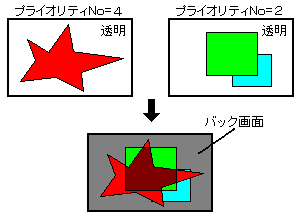

★
HARDWARE Manual★
VDP2ユーザーズマニュアル
★
HARDWARE Manual★
VDP2ユーザーズマニュアル
▲
戻る｜
進む▼
VDP2ユーザーズマニュアル
第12章 カラー演算
- VDP2は、スプライトと各スクロール画面のプライオリティを比較して得たトップ画像とセカンド画像のカラーデータを、指定した割合で演算することができます。そのとき、スプライトのカラー演算割合は最大8個の値からキャラクタごとに選択することができ、各スクロール画面のカラー演算イネーブルは特殊カラー演算機能を使用することで、キャラクタごとやドットごとに指定することもできます。
- セカンド画像とサード画像(ラインカラー画面を挿入した場合はフォース画像まで)を一定の割合でカラー演算したものをセカンド画像にすることで、最大4画面までのカラー演算をすることができます。
また、ボカシ演算機能をイネーブルにすることで、遠くの背景をぼかすような効果を出すこともできます。
■12.1 カラー演算機能
- カラー演算機能は、トップ画像とセカンド画像(またはセカンド画像、サード画像、フォース画像の3画像を一定の割合で加算した画像)をRGB各カラーごとに指定した割合で加算する機能で、半透明の画面どうしを重ね合わせた様な効果を出すことができます。カラー演算機能を図12.1に示します。
図12.1 カラー演算機能

●通常のカラー演算
●拡張カラー演算機能
●ボカシ演算機能
▲
戻る｜
進む▼
★
HARDWARE Manual★
VDP2ユーザーズマニュアル★
第12章 カラー演算
Copyright SEGA ENTERPRISES, LTD., 1997